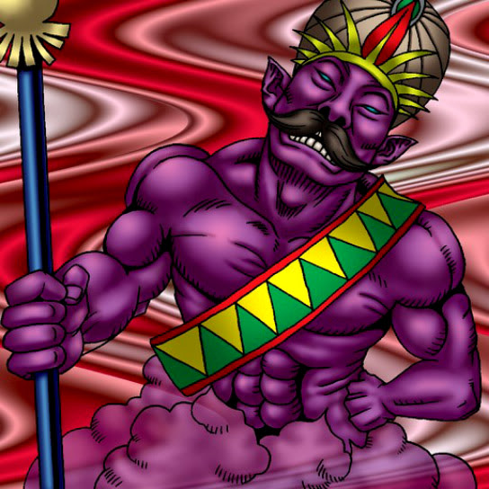

Lord of the Lamp

STATS
ATK: 1400
DEF: 1200DECK COST
Deck Cost per Card: 26Fusion List (3 Possible Fusions)
- Lord of the Lamp + Arlownay = Rose Spectre of Dunn
- Lord of the Lamp + Dancing Elf = Dark Elf
- Lord of the Lamp + Versago the Destroyer = La Jinn the Mystical Genie of the Lamp